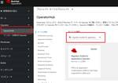

赤帽エンジニアブログ
https://rheb.hatenablog.com/
レッドハット株式会社のエンジニアがオープンソーステクノロジーについての最新の情報を発信するブログ。LinuxからOpenStack、OpenShift、Ansibleなどの情報を発信しています。
フィード

Migration Toolkit for Applicationsを使って組織のシステムのクラウドへの移行を促進させる 3. 使用(アセスメント)編 1
1
赤帽エンジニアブログ
OpenShift AppDev SSAの瀬戸です。 Migration Toolkit for Applications(以下MTA)という製品をご存知でしょうか？Red Hatが出している静的解析ツールで、古いバージョンのJBoss EAPやOpenJDKなどのミドルウェアで動いているアプリケーションを最新のミドルウェア上で動作させるために必要な修正を洗い出してくれます。 実は、それだけではなく、組織のアプリケーションのモダナイゼーションのサポートもしてくれます。この記事では何回かにわけて、どういった機能があるのかと実際の使い方をご紹介したいと思います。 ちなみに、MTAは無償でお使いいた…
7日前

Migration Toolkit for Applicationsを使って組織のシステムのクラウドへの移行を促進させる 2.インストール編 1
赤帽エンジニアブログ
OpenShift AppDev SSAの瀬戸です。 Migration Toolkit for Applications(以下MTA)という製品をご存知でしょうか？Red Hatが出している静的解析ツールで、古いバージョンのJBoss EAPやOpenJDKなどのミドルウェアで動いているアプリケーションを最新のミドルウェア上で動作させるために必要な修正を洗い出してくれます。 実は、それだけではなく、組織のアプリケーションのモダナイゼーションのサポートもしてくれます。この記事では3回にわけて、どういった機能があるのかから実際の使い方をご紹介したいと思います。 ちなみに、MTAは無償でお使いいた…
9日前
Migration Toolkit for Applicationsを使って組織のシステムのクラウドへの移行を促進させる 1.概要編 1
赤帽エンジニアブログ
OpenShift AppDev SSAの瀬戸です。 Migration Toolkit for Applications(以下MTA)という製品をご存知でしょうか？Red Hatが出している静的解析ツールで、古いバージョンのJBoss EAPやOpenJDKなどのミドルウェアで動いているアプリケーションを最新のミドルウェア上で動作させるために必要な修正を洗い出してくれます。 実は、それだけではなく、組織のアプリケーションのモダナイゼーションのサポートもしてくれます。この記事では3回にわけて、どういった機能があるのかから実際の使い方をご紹介したいと思います。 ちなみに、MTAは無償でお使いいた…
10日前

Event-Driven Ansible と IBM Turbonomic / Instana の連携
赤帽エンジニアブログ
皆さんこんにちは、Red Hat の岡野です。 前回 Event-Driven Ansible のお試し方法についてご紹介させていただきましたが、今回は一歩踏み込んで、サードパーティ製のアプリケーションと連携した動作についてご紹介します。 Event-Driven Ansible (EDA) は以下のような様々なイベントソースと連携し動作します。 ・Zabbix ・IBM Instana, Turbonomic ・Dynatrace ・CrowdStrike ・AWS Cloudtrail, SQS ・Azure Service Bus など 今回この中から、IBM 社の Turbonomic…
20日前
JBoss Enterprise Application Platform 8.0 の新機能
赤帽エンジニアブログ
Red Hat のソリューションアーキテクトの瀬戸です。 この記事はRed Hat Developerのブログ記事、What's new in JBoss Enterprise Application Platform 8.0 | Red Hat Developerを、許可をうけて翻訳したものです。 Red Hat は最近、Jakarta EE 準拠プラットフォームの最新リリースであるJBoss EAP 8.0を発表しました。このリリースにより、企業は最新のJakarta EE APIを活用し、エンタープライズ Java アプリケーションのライフサイクルを大幅に延長できるようになります。 JB…
2ヶ月前
Event-Driven Ansible の始め方
赤帽エンジニアブログ
皆さんこんにちは、Red Hat の岡野です。 前回の『Ansible Lightspeed の始め方』に引き続き、AAP 2.4 のもう 1 つの注目の新機能、Event-Driven Ansible (EDA) のお試し方法についてご紹介したいと思います。EDA を利用することにより、IT 運用において発生する様々なイベントを自動的に処理することが可能となります。EDA の概要は、こちらをご確認ください。 1. EDA と環境概要 Event-Driven Ansible （以下 EDA）は、Ansible Automation Platform 2.4 (AAP 2.4) から新たに追加…
2ヶ月前
Red Hat Developer Hub (Backstage) でGolden Pathを作ろう！
赤帽エンジニアブログ
こんにちは、Red Hatでソリューションアーキテクトをしている北村です。 2024/1/17に"Red Hat Developer Hub: 一貫した開発への入り口"という記事がエントリーされました。こちらの記事に記載がある通り、Red Hatは2024/1/16にRed Hat Developer Hub(以下、RHDH)をGAリリースしました。 rheb.hatenablog.com Red Hat Developer Hubとは RHDHはBackstageをベースとしたInternal Developer Portalであり、Backstageの基本機能に加え、サンプルのGolden…
2ヶ月前
Red Hat Developer Hub: 一貫した開発への入り口
赤帽エンジニアブログ
Red Hat のソリューションアーキテクトの瀬戸です。 この記事はRed Hat Developerのブログ記事、Red Hat Developer Hub: Your gateway to seamless development | Red Hat Developer を、許可をうけて翻訳したものです。 Red Hat Developer Hub がGAになり一般提供が開始されました。 この記事では、Developer Hub の紹介と共に、Developer Hub が開発プロセスをどのように合理化するかについて説明します。 また、Red Hat Developer Hub を介してプ…
2ヶ月前
Ansible Lightspeed の始め方
赤帽エンジニアブログ
皆さんこんにちは、Red Hat ソリューションアーキテクトの岡野です。2024 年が始まりましたね。今年もたくさんの Ansible Automation Platform 関連の情報をお届けできればと考えています。是非お付き合いください。 さて、昨年末こちらで予告させていただいた通り、まずは、Ansible Lightspeed のお試し方法についてご紹介したいと思います。実は昨年の12月にパートナー様向けに Ansible Automation Platform 最新情報に関するセミナーを開催したのですが、その際も Ansible Lightspeed は大変引き合いが強く、 『すぐに試…
2ヶ月前
書籍「Podmanイン・アクション」の紹介
赤帽エンジニアブログ
Podmanイン・アクション Red Hatでソリューションアーキテクトをしている田中司恩(@tnk4on)です。今回は私も執筆に参加した書籍「Podmanイン・アクション」について紹介いたします。 （2024年1月16日、更新）インフラエンジニアBooksのアーカイブURLと資料のリンクを追記しました。 Podmanイン・アクション 2023年9月に翻訳本である「Podmanイン・アクション」が発売されました。Podmanイン・アクションの原著は以前に紹介した「Podman in Action」です。 rheb.hatenablog.com Podmanイン・アクションはレッドハット株式会社…
3ヶ月前
2024年のAnsibleとわたし
赤帽エンジニアブログ
みなさんメリークリスマス! Red Hatのさいとう(@saito_hideki)です。 この記事は､Ansible Advent Calendar/Red Hat Advent Calendarの2023年最終日の記事です。 ここ数年、Ansible Advent Calendar/Red Hat Adivent Calendarでは、最終日に翌年のAnsibleプロジェクトに関連する動向を予想したお話を書いてきました。今回は、Event Driven Ansibleのダッシュボードを含めたコントロールプレーンを提供するためのアップストリームプロジェクトである EDA Serverを取り上げ…
3ヶ月前
cisco.iosxr.iosxr_config モジュールの match に与える4種それぞれのオプションの違いについて
赤帽エンジニアブログ
こんにちは。Red Hat にて Ansible Automation Platform のテクニカルサポートをしている呉です。 ※暖房が効かなくなってしまい、極寒の家で毛布被って体育座りしながら書いてますので、以下、暖い心で読んでいただけましたら幸いです。;) 今回は、Ansible モジュールの小ネタの一つとして cisco.iosxr.iosxr_config モジュール(https://docs.ansible.com/ansible/latest/collections/cisco/iosxr/iosxr_config_module.html)の match に与える事のできる以下の…
3ヶ月前
効果的なテクニカルサポートへの問い合わせ方法とは
赤帽エンジニアブログ
※この記事はRed Hat Advent Calendar 2023 の23日目です。 qiita.com こんにちは。Red Hat にてOpenStackのテクニカルサポートの担当をしている井川です。 日頃、サポートケースを通じて多くの問い合わせを頂いておりますが、認識の齟齬や状況・問題の把握に時間を要し、残念ながら解決までに時間のかかることもあるのが現状です。 今回、より早く解決させるためのコツ(tips)・ベストプラクティスについて、「サポートサービス利用ガイド」の中から「サポートサービスをうまく活用するコツ」をご紹介したいと思います。 サポートサービスをうまく活用するコツ 詳細を記載…
3ヶ月前
Ansible Automation Platform 2.4 注目の新機能紹介
赤帽エンジニアブログ
皆さんこんにちは、Red Hat ソリューションアーキテクトの岡野です。 2023 年も残すところあと少しとなりました。さて、今回は、注目の新機能をサポートし、今年GAとなった Ansible Automation Platform 2.4 について、2023 年の締めくくりとして書いておきたいと思います。それぞれのお試し方法については、年明け、またこちらの Blog でご紹介予定です。 Ansible Automatio Platform 2.4 (以下 AAP2.4) の新機能、細かいところを上げるとたくさんあるのですが、なんといっても注目は、 ・Event-Driven Ansible …
3ヶ月前
Vectorで遊ぶ
赤帽エンジニアブログ
id:nekop です。この記事はOpenShift Advent Calendar 2023のエントリです。 OpenShift Loggingでは長くEFK (Elasticsearch, Fluentd, Kibana)スタックが利用されていましたが、現在のリリースはLoki Vectorスタックを標準的に利用するようになっています。Elasticsearchは2022-07に非推奨、Fluentdは2023-01に非推奨となりました。 OpenShift LoggingではVectorによるログ収集と転送がサポートされています。VectorはDatadog社により開発されたデータ転送処…
3ヶ月前
マイクロサービスとメッセージングのなぜ [希望編]
赤帽エンジニアブログ
レッドハットでインテグレーションのためのミドルウェアのテクニカルサポートを担当している山下です。以前、SAGAやEventStormingについて記述すると宣言していたのですが、実際のところ私が書くよりもよっぽど良い日本語の書籍や記事がでていて、もう書く必要もないと思っていたのですが、今回機会をいただいたので約４年ぶりに”マイクロサービスとメッセージングのなぜ"の希望編を書くことになりました。今回の記事ではSAGAやEventStormingの詳細は書かないのですが、私がイベントやメッセージングが必要と考えるに至った危機感や希望を共有します。そうした意味ではむしろ原点ともいえる内容になっていま…
3ヶ月前
Red Hat OpenShift Service on AWS (ROSA)を無料で試してみよう
赤帽エンジニアブログ
OpenShift Advent Calendar 2023/AWS Containers Advent Calendar 2023の12/14の記事です。 Red Hatの小島です。 2023年12月に、Managed OpenShiftサービスの1つであるROSAを無料で試せるROSA Hands-on Experienceというサービスがリリースされました。本記事では、同時期に提供開始しましたROSA Hosted Control Plane (HCP)の特徴と共に、ROSA Hands-on Experienceの概要をご紹介します。 ROSA Hosted Control Plane…
3ヶ月前
systemdのserviceをstraceする時のtips
赤帽エンジニアブログ
Red Hatの森若です。 この記事はRed Hat Advent Calendar 2023 の21日目です。 デバッグなどのためにsystemdのservice unitで起動されるプロセスにstraceを仕掛けたいとき、ちょっとしたハマり所があるのでその説明とワークアラウンドを紹介します。 目次 実行中のserviceをstraceする 実行開始からserviceをstraceする Type=forking 時の問題 参考文献 おまけの宣伝 実行中のserviceをstraceする この場合は特にハマるところはありません。 既に実行中のプロセスへのstraceは、cgroupで関連するプ…
3ヶ月前
【Ansible】win_shellモジュールで実行したコマンドの文字化けを修正する
赤帽エンジニアブログ
この記事は、「Red Hat Advent Calendar 2023」20日目の記事です。 Windowsの文字化け問題 AnsibleでWindowsノードを管理していると、特にwin_shellモジュールでコマンドを実行した際などの実行結果が時折文字化けしてしまうケースがあります。こうなってしまうと、実行結果が正しく読み取れず、Windows自動化の障壁となってしまいます。 なぜ文字化けが発生するのか Ansibleでは、WinRM経由でWindowsに接続しますが、その際の新規セッションに対してはUTF-8を利用するよう指定して接続します。これは、通常のWindowsモジュールの実行で…
3ヶ月前
Red Hat SSO改めRed Hat build of Keycloakの変更点やマイグレーション情報について
赤帽エンジニアブログ
※この記事は Red Hat Advent Calendar 2023 の 18日目の記事です。 qiita.com Red Hatのソリューションアーキテクトの井上たかひろです。 Red Hat SSO(Single sing-on)改めRed Hat build of Keycloakが2023年11月にGAになりました。 この記事では、Red Hat SSOからRed Hat build of Keycloakでの主な変更点とマイグレーション情報について記載します。 Red Hat SSOからRed Hat build of Keycloakでの主な変更点 Keycloakがメジャーにな…
3ヶ月前
Persistent Volume の Space Reclamation について草々
赤帽エンジニアブログ
※この記事は Red Hat Advent Calendar 2023 の 16日目の記事です。 qiita.com こんにちは。レッドハットでクラウドインフラを生業にしている宇都宮(うつぼ)です。 早速ですがストレージに関する問題です。 問題 アリスはオンプレミスで展開された OpenShift（または Kubernetes）クラスタの管理者です。 クラスタには1つ 10TiB ものデカすぎる PV があります。この PV のバックエンドはブロックストレージで、Thin-provisioned な論理ボリュームを使っています。 ストレージの管理者であるボブからは「もうストレージの容量がなくな…
3ヶ月前
Amazon Linux 2023でPodmanを動かす
赤帽エンジニアブログ
Red Hatの織です。本記事はAWS Containers Advent Calendar 2023の12/15のエントリーです。 内容としてはAmazon Linux 2023でPodmanを動かしてみました、という話です(AWSのコンテナ関連サービスを使ってなくて申し訳ありません...)。一言でまとめると、現状いろいろパッケージが足りないため、頑張ってコンパイルしていくhard wayな感じです。男らしくmainブランチのHEADをごりごりとビルドしていきます。 いろいろコンパイル rpmがあるものについてはそれを活用します。 sudo dnf install -y git golang…
3ヶ月前
Windowsクライアント向けJavaアプリケーションをActive Directoryで配布する
赤帽エンジニアブログ
Red Hat のソリューションアーキテクトの瀬戸です。 概要 以前jpackageを使ったクライアントアプリケーションのパッケージングの方法についてまとめました。 rheb.hatenablog.com その時にmsi形式でパッケージングをしましたが、このmsiという拡張子のついたファイルは何なのでしょうか？ msiはWindows上で実行できるファイルの中で、ソフトウェアのインストールに使えるファイルにつけられる拡張子です。Microsoft Windows Installerの略となっています。 特別な拡張子が割り当てられているだけではなく、中に含まれるファイルの実行時のオプションや内容…
3ヶ月前
OpenShift Logging の Loki にコマンドでアクセスしてみる
赤帽エンジニアブログ
はじめに Loki について クエリの種類 Log クエリ Metric クエリ OpenShift Logging としての構築 Operator の導入 Loki のデプロイ Cluster Logging として利用する 簡単なアクセス確認 Web Console からのアクセス CLI からのアクセス アクセス方法の確認 Metric クエリを呼び出してみる LogCLI おわりに はじめに Red Hat Advent Calendar 2023 の 12月14日の記事です。OpenShift Cluster Logging で Loki が利用できるようになってからしばらく時間が経…
3ヶ月前
libkrunでのネットワーク通信
赤帽エンジニアブログ
Red Hatの織です。本記事はRed Hat Advent Calendar 12/5分の記事です (遅くなってしまいました)。また、Advent Calendar 12/3の「libkrunで遊ぶ」の続編でもあります。 Transparent Socket Impersonation libkrunでのネットワーク通信は、Transparent Socket Impersonation (TSI) という仕組みを使っています(直訳すると「透過的なソケットのなりすまし」)。TSIはlibkrun以外では聞いたことがないので、おそらく一般的な用語ではなくて、libkrun特有の概念ではないかと…
3ヶ月前
OpenShift Virtualization ( Kubevirt ) でVM管理もCloud Nativeに (2)
赤帽エンジニアブログ
こんにちは、Red Hatでソリューションアーキテクトをしている石川です。 前回に引き続き、今回もOpenShift Virtualization(OCP Virt)について紹介していきたいと思います。 環境の構築やインストールに関しては前回の記事を参照下さい。 rheb.hatenablog.com この記事ではWindows ServerをOCP Virt上でVMとして構築し、関連してContainerized Data Importer(CDI)やDataVolumeについて紹介したいと思います。 Windows Serverの構築 Red HatはWindows Serverを実行する…
4ヶ月前
libkrunで遊ぶ
赤帽エンジニアブログ
Red Hatでコンサルタントをしている織です。本記事ではibkrunについて紹介します。Red Hat Advent Calender 2023の12/3のエントリです (だいぶ過ぎてますが、空いたままだったので急遽埋めました)。 libkrunについては、inductorさんによるKernel/VM探検隊online part2の講演が有名かもしれません。本記事(および続編...を書く予定です)では、別の観点でlibkrunをご紹介できればと思います。 libkrunとは libkrun とは動的ライブラリとして提供される仮想マシンモニター(VMM)です。とても簡単に言うと、このライブラリ…
4ヶ月前
OpenShift AIで分散学習を試してみる
赤帽エンジニアブログ
こんにちは、Red Hatでソリューションアーキテクトをしている石川です。 過去に何度かこのブログの中でOpenShift Data Scienceについて取り上げてきましたが、 直近のリリースバージョンであるv2.4から機械学習における分散学習を実現する機能がTech Previwとして追加されました。 access.redhat.com 今回はこちらの機能をデプロイしてみてどういった仕組みで分散学習を実現しているのか見ていきたいと思います。 なおTech Preview機能についての制約についてはこちらを参照下さい。 またプロダクトの正式名称がRed Hat OpenShift Data …
4ヶ月前
今さら聞けない!? OpenShift4の多すぎるインストール方式をおさらいする
赤帽エンジニアブログ
目次 目次 はじめに プラットフォーム まずはインストールするプラットフォームを選択する any platformとbaremetalの意味とちょっとした歴史的経緯 インストール方式 IPIとUPIは何が違うのか その他のインストール方式 SNO(Single Node OpenShift) Assisted Installer Agent-based installer インターネット非接続環境 インストールパターンと難易度について まとめ はじめに はじめまして、Red HatでOpenShift Container Platformのテクニカルサポートの野間です。Red Hat Adve…
4ヶ月前